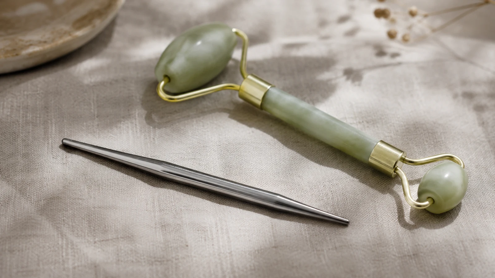

The Bojin Journal · The method
Bojin vs. the Jade Roller in Your Drawer

Nearly every woman who walks into my class already owns a jade roller. It lives in a drawer or the refrigerator door, comes out a few times a month, feels lovely for two minutes, and goes back without much to show for it. She assumes she used it wrong. She didn't. A roller was never built for the job she bought it to do, and once you see what it was built for, you'll know which tool to reach for on which night.
A roller glides past tension. Bojin stays on it at a held angle until it eases. The honest difference, and when each earns its two minutes. Remember: this is a gentle, supported self-care observation you can test on one side of your face—never a forceful press or medical treatment.
What a roller is built to do
A roller is a barrel on an axle. Push it and it rolls; the pressure rises and falls with every turn, and the barrel keeps traveling whether or not it just crossed the one spot that needed attention. No flaw there. A rolling tool covers ground evenly, cools the skin, and asks nothing of you. That is the whole design.
Tension refuses to cooperate with that design. It bunches at the corner of the jaw, along the ridge of the brow, at the spot beside your eye that tightens every afternoon around four. A tool that must keep moving cannot linger there, cannot hold an angle there, cannot work the spot with any intention. It rolls on. It was built to.
What order, angle, and position mean
Bojin is a method before it is a tool: a set order to work the face in, a set angle held against the bone, a set position you stay on until it eases, then the next. The stainless steel bojin stick, slim, with a broad edge and a rounded tip, exists so your hand can hold that angle steady on one spot. A barrel on an axle cannot do this. Push a roller against the jaw corner and it escapes the spot by rolling, every time, because escaping the spot is its mechanism.
A roller covers ground because it must keep rolling. Bojin does the opposite on purpose: find the tight spot, stay on it at a held angle, ease it, move to the next. One is a soothing habit. The other is a targeted release. Your face has room for both, on different nights.

This is also why bojin is not "a fancier roller." The two never competed. Different jobs, not a contest.
Feel the difference in 5 minutes
Run this comparison with what you already own: the roller, plus a gua sha stone or clean fingertips.

Roll your usual two minutes first
Give it a fair turn. Note the coolness, the evenness, and note whether it lingered anywhere. It didn't, and now you know why.
Find your one tight spot
Press your molars together for a second, or raise your brows. Feel where the tension bunches. That spot is the target.
Hold a fixed angle on it
Set the flat edge of a stone, or your fingertips, against the spot, matching the angle of the bone beneath. Make slow, short passes without leaving it.
Ease it, then move on
When the spot softens, go to the next tight position. You are following a map of tension, not a map of skin.
Sweep down the neck to finish
Give whatever you moved a route out: slow passes down the sides of the neck.
Compare the two sensations. The spot you held an angle on feels different from the rolled ground around it, looser, less braced. The roller alone never reaches that, and now you have felt why.
Where each fits your week
Keep the roller for what it does well: a cool, calming two minutes, no learning curve, no effort. Reach for the method, with a stone, fingertips, or a bojin stick, on the night you can name the spot that is bothering you. Both give results that are gentle and temporary; they ease and settle rather than remove or reshape. Neither replaces the other, and neither pretends to.
The roller in your drawer isn't a mistake. It just answers a different question than the one your tight jaw corner has been asking. Tonight you can answer both.
Quick answers
Should I throw out my jade roller?
Keep it. The cool stone makes a pleasant warm-up before a bojin session, and on a night you only want two calm minutes, it earns its place. The point is to know what each tool does, not to replace one purchase with another.
Why does a roller feel so relaxing if it isn't doing much?
Cool stone on warm skin, plus a slow repeated motion, soothes the nervous system, and that counts for something on its own. Soothing and releasing are two different results, though. A roller can feel wonderful for two minutes and still glide straight past the one spot that has been tight since Tuesday.
Can I use my roller with the bojin method instead of a stick?
The shape gets in the way. A barrel on an axle cannot hold a fixed angle against one spot; it rolls off the moment you push. To try the method itself, borrow the flat edge of a gua sha stone or use clean fingertips until you have a bojin stick. Both hold an angle. A roller never will.
Is a bojin stick expensive compared to a roller?
The dedicated stick is still coming, and you need to buy nothing to start tonight. Clean fingertips or the stone in your drawer will show you what order, angle, and position do. The method carries the value; the tool sharpens it.
Watch the difference an angle makes
Seeing a held angle work one spot, next to a roller gliding past it, settles this comparison faster than any paragraph. My free 3-minute video shows both, so you can feel it on your own face tonight.
Watch the free 3-min videoYu-Ting Lan is a Taiwan-based international bojin instructor and the founder of Héhé Studio. She has taught her bojin method to more than a thousand students, from complete beginners to grandmothers, across Taiwan, Hong Kong, and Malaysia.